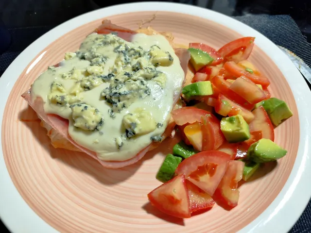

Suprema de pollo a la pizza

Ingredientes
- 1 pechuga de pollo
- queso cremoso o mozzarella
- jamón, paleta
- salsa de tomate (casera o de pizza)
- orégano
- sal
Preparacion
- Tomamos la suprema y con un cuchillo abrimos por la mitad, como si fuera un libro y luego ponemos un folex o bolsita y le damos con el martillo para afinar un poco y expandir a gusto
- Cocinamos de un lado hasta dorar en una fuente con un poquito de aceite y damos vuelta salamos a gusto y agregamos la salsa de tomate la paleta o jamón y el queso cremoso, en este caso hice una también con queso azul mí favorito
- Llevamos nuevamente al horno hasta que se derrita el queso y terminamos con un poquito de orégano por arriba (si querés podes agregar aceitunas, morrones, huevo picado lo que te guste)
-
Servimos con una rica ensalada a gusto, puré o papas fritas lo que te gusta para acompañar y a disfrutar
Trucos
Para darle un toque más de sabor, cuando estás cocinando el pollo ante de dar vuelta agraga u poquito de vinagre en la fuente para que levante todo el sabor que está quedando en la fuente
Home